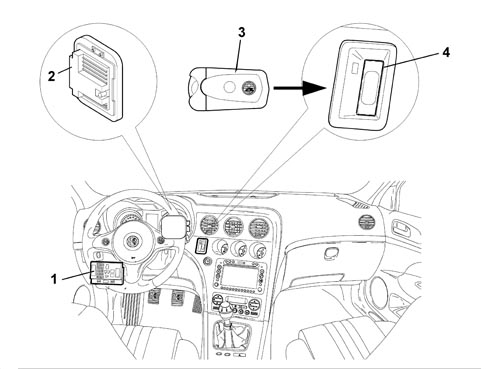
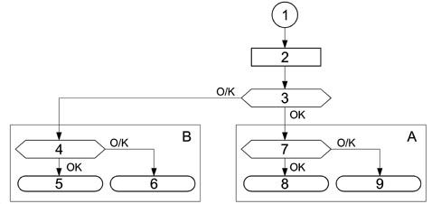
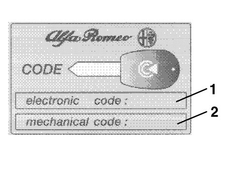
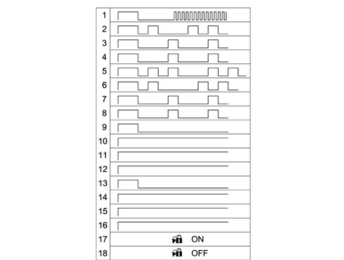
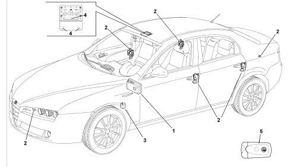
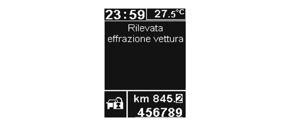
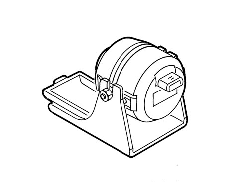
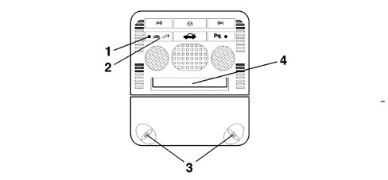

ALFA ROMEO CODE SYSTEM
The vehicles are equipped with an electronic system known as the ALFA CODE to produce the engine immobilizer function.
The ALFA CODE system only allows the engine to be started by means of the NCM after a secret code, memorized previously in the NCM, is received.
The second generation Code system is incorporated in the Body Computer Node (NBC).
The ALFA CODE system comprises 5 basic components (in addition to the Body Computer which acts as a control unit):
- CAN line for dialogue between the NBC and the NCM
- two-way serial line for recovery (W line);
- two TEG devices (electronic key) containing a transponder with a secret code;
- an aerial that reads the code contained in the TEGs;
- the NCM.

1 - NBC
2 - NCM
3 - Aerial in the TEG Reader
4 - TEG (electronic key)
Operation
The ALFA CODE allows the start of the engine management by the NCM by means of a coded dialogue between the NBC and NCM during the stage that precedes start up.
After key on - i.e. TEG correctly inserted in the TEG Reader - the NCM sends a code reques to the NBC, which responds only after it has identified (via its aerial) the presence of a known TEG in the TEG Reader.
If the secret code in the answer is valid, the NCM continues with the regular engine management activities, allowing the engine to be started up.
The NCM can only memorize the secret code through a special procedure.
Operation of the ALFA CODE is guaranteed if any of the other NBC functions are not working properly.
After recognizing an enabled transponder, the ALFA CODE switches off any alarm system.
Interaction between the alfa roce and the electronic key (teg)
Every TEG contains a transponder with an IDENTIFICATION CODE and a SECRET CODE.
As soon as the TEG is inserted, the transponder sends the identification code to the ALFA CODE which, having recognized it as one of the enabled ones, continues with the cryptographic transponder recognition strategy.
If the identification code is not recognized, the procedure is aborted and the engine cannot be started.
The cryptographic transponder is recognized by means of a challenge-response algorithm with an encrypted code exchange.
The code recognition time is less than 160 ms per attempt.
The ALFA CODE attempts transponder acquisition for up to 1 second.
Communication between the engine control node and the alfa code
Communication between the ALFA CODE (NBC) and NCM takes place via the C-CAN in normal service conditions. Every exchange of information between the ALFA CODE and the NCM is guided by the NCM (ALFA CODE never interrogates the NCM but only responds after receiving a request).
After KEY-ON, the flow of code exchange operations between the ALFA CODE and the NCM depends on the status (blank or memorised) of the engine control unit.
If the NCM is blank, the procedure involves sending a fix-code request to the NBC: in this way the NCM learns the secret code and stores it in its memory. This procedure is known as CODE RECORDING.
If the NCM has already been stored, the procedure involves checking that the fix-code stored in the engine management control unit memory and the one memorized in the NBC correspond: the NCM asks the NBC for the secret code and compares it with its own. This procedure is known as CODE VERIFY.

1 - Key-on
2 - NCM initialisation
3 - NCM status memorised/blank
4 - Memorisation successfully completed?
5 - ENABLE ENGINE MANAGEMENT = the software flow continues with engine management
6 - PROHIBIT ENGINE MANAGEMENT = activates a timer that imposes a delay to enable a new procedure only after 0 - 600 s. The +15 supply must be turned off and then on again. If no timer is available (con +30), it will be necessary to wait with key-on for 0 - 600 s. After this, a new procedure can be run, i.e. KEY- OFF and KEY-ON
7 - Is the secret code valid?
8 - SEE POINT 6
9 - SEE POINT 5
A - CODE VERIFY
B - CODE RECORDING
Code recording
The CODE RECORDING procedure is the memorizing of the fix code in the engine control unit.
Only after the ALFA CODE has memorized the identification codes, the secret code and the fix code, is it ready to satisfy the request to transmit a code from a blank NCM.
After power on, the engine control unit initialises its software and requests a fix code if it is blank.
If the ALFA CODE is not blank, it responds by sending the fix code, but only after having recognized an authorized TEG. If the TEG is not authorized (unrecognized) or there is no TEG inserted, the ALFA CODE does not respond.
When the ALFA CODE is blank, the aerial contains no transponder and a PER (fix code request) is sent from the NCM to the ALFA CODE, the ALFA CODE does not respond.
Code verify
This standard procedure is repeated throughout the vehicle lifetime whenever the user inserts the TEG in the Reader (KEY ON): this procedure enables the starting of the engine if the TEG is inserted and enabled.
The code verify procedure continues even when the user presses the START/STOP key (CRANKING).
After KEY ON (+15), the ALFA CODE detects whether the TEG transponder has been enabled.
At the same time as KEY ON, the NCM initializes its software until it verifies whether a fix code has been memorized. If the answer is yes, it sends a fix code request to the ALFA CODE.
In response to this request, the ALFA CODE only sends the fix code, encrypted by the Minikrypt, to the engine control unit if the transponder is recognized as enabled.
If the ALFA CODE receives further fix code requested, it only needs to re-read the transponder in the aerial before responding to the NCM if visible signs of tampering are present (see later).
If the transponder is not recognized (incorrect transponder, no transponder in the aerial, etc.), the ALFA CODE will send the code (incorrect transponder or missing transponder) to the engine control unit.
If the ALFA CODE is blank and the NCM sends a fix code request, after having recognized the transponder, the ALFA CODE responds by sending a blank NBC transponder recognized code message encrypted by the Minikrypt.
Method of using c-can or recovery line w
Communication between the NBC and NCM takes place along the C-CAN line by default: if the C-CAN line is faulty, the recovery strategy is as follows:
- C-CAN faulty
- the NCM changes to recovery status on the W serial line and requests the code from the NBC: if the outcome is positive, start-up is permitted.
- in the event of problems on the W line, the NCM transfers to recovery status by means of the Diagnostic instrument at the end of the retransmission attempts.
The recovery strategy is mainly managed by the NCM, which acts as a master unit during communication: the NBC, acting as the slave unit, must always be ready to respond to code requests from the C-CAN network and also from the W serial line.
Communication via the c-can network
Communication via the Body Computer and the NCM takes place via the following two CAN messages:
- IMMO CODE REQUEST (immo code request)
- IMMO CODE RESPONSE (immo code response).
The MMO CODE REQUEST is sent by the NCM and received by the NBC.
The MMO CODE RESPONSE is sent by the NBC and received by the NCM.
Communication via the w line
If the system changes to recovery mode due to a malfunction in the CAN network, information must be exchanged between the NCM and NBC via the W serial line.
This code exchange is only carried out for the CODE VERIFY procedure: it is not therefore possible to run a CODE RECORDING procedure via the W line.
Information must be exchanged via the serial line in exactly the same way as via the C-CAN network: The NCM control unit is the communication master unit while the NBC control unit responds to requests received by the NCM.
Both messages - IMMO CODE REQUEST and IMMO CODE RESPONSE - are carried on the serial line.
Checking the w line electrical connection
Because communication only takes place on the W line in recovery mode, an ERROR status would not not be recognised until the system was used i.e. because the customer would not be able to move the vehicle.
A strategy for checking the W serial line has therefore been added so that the line can be diagnosed.
Protection codes
The ALFA CODE function is performed via the exchange of secret codes between system subunits (TEG, NBC, engine control unit).
- UNIVERSAL CODE this is the code that an unprogrammed ALFA CODE sends to the NCM when it detects the presence of a transponder in the TEG. The ALFA CODE warning light turns on at a frequency of 1.6 Hz and duty cycle of 50%. The warning light flashes to indicate that the system is properly connected but the vehicle is not protected by a code.
- IMMO CODE: This is the basic code that provides the secret code and the fix code. An automatically generated immo code is allocated to each vehicle. The IMMO CODE is used to generate all the other secret codes used by the ALFA CODE function.
- SECRET CODE: This code is resident in the transponder. It is stored in the transponders contained in the TEG when the transponders are programmed and in the ALFA CODE when the keys are programmed at the end of line.
- FIX CODE: This is stored in the ALFA CODE during end of line programming.
- ELECTRONIC CODE (PIN): This is obtained from the fix code and printed on the CODE CARD, which is given to the vehicle owner. It takes the form of a 5-figure decimal code (0 is not permitted).
It is used to access the NBC memory in protected mode in order to reprogram or program new remote control units (TEGs) and/or perform specific diagnostic functions.
It is also used in the accelerator pedal recovery procedure described in the specific section on the engine control unit.
- IDENTIFIER: This is resident in the transponder and different for each transponder. It is stored in the ALFA CODE during the programming procedure. The ALFA CODE manages a table of enabled identifiers and another table of disabled identifiers.
Alfa code function in the nbc
The ALFA CODE is a function of the NBC.
The main ALFA CODE functions are:
- to detect insertion of the TEG in the TEG Reader (+15);
- to place the alarm in a deactivated state after recognizing an enabled TEG;
- to emit an electromagnetic field to read the TEG transponder;
- to send the random code to the transponder;
- to receive the encrypted code transmitted by the TEG;
- to store up to 8 identification codes;
- to store the secret code;
- to manage a list of up to a maximum of 8 enabled identification codes;
- to manage a list of 16 permanently disabled identifiers.
- to manage the C-CAN line towards the engine control unit;
- to control activation of the warning light on the panel via communication with the NQS;
- to carry out self-diagnosis.
Aerial
The aerial in the TEG Reader is powered by the NBC to energise the TEG transponder.
Since the aerial needs to be as close as possible to the transponder (on account of electro-magnetic immunity, the limited range of the transponder and small dimensions) it is fastened to the front part of the TEG-Reader.
Transponder (in the teg)
A cryptographic transponder is located inside the TEG.
Operation
At the time of Key On (+15), the transponder is energised by the aerial and responds by emitting a rolling, encrypted secret code.
The emission into the atmosphere is sufficiently powerful to produce a high immunity to electromagnetic interference and the range is such that it can be received by the aerial in the TEG READER..
If the code is recognized as valid, the ALFA CODE sends the engine control unit, on request, a coded signal allowing the engine to be started.
Up to 8 electronic keys (TEGs) can be stored in the ALFA CODE.

|
The TEGs are supplied already memorised by the production plant. All the codes are also stored in a database managed by Parts. When the new vehicle is delivered to the customer, the service network does not need to carry out any memorisation procedure. If the TEGs are lost or extra TEGs are required, order from Parts in accordance with the procedures described below and in the REPAIR PROCEDURES section. |
Specifications
The transponder in the TEG has the following coded in its memory:
- SECRET CODE which is the same for each transponder in the same kit;
- IDENTIFICATION CODE which is different for each transponder produced;
- PROGRAMMING DATE for the secret code
- The identification code differs from transponder to transponder to guarantee that no two transponders have the same identification code even if there is a request for a duplicate in the Network.
Programming the teg
The memorisation procedure is divided into two stages in sequence:
- the transponder in the TEG is stored in the ALFA CODE;
- The ALFA CODE manages memorisation of the fix code in the engine control unit.
This second stage is implemented automatically when the first is completed successfully after key on.
The transponders are sent to the TEG manufacturer programmed with the identifier (different for each transponder).
The manufacturer generates an immo code, computes the relevant codes (secret code, fix code) and programmes the secret code and the programming date in the transponders.
Once programmed, it prints a bar code on a disposable label that contains the immo code, the TEG identifiers, the programming date, the emergency key mechanical code (door opening) and, if present, the remote control/alarm codes.
The secret code in the TEGs is stored in the ALFA CODE during the end of line programming procedure and is used for TEG identification in the cryptographic algorithm.
Programming a new body computer
If the Body Computer is replaced, the ALFA CODE must be programmed with the secret code and fix code of the vehicle to which it will be installed.
The database is accessed using the chassis number to obtain the vehicle immo code. This is used to supply the secret code and fix code, which are programmed in the NBC.
For a new NBC, the tables of enabled and disabled identifiers are new.
Once the NBC has been installed in the vehicle, the TEG identifiers are stored (see reprogramming).

|
An ALFA CODE programming operation can only be performed with a blank NBC by the ALFA ROMEO parts dept. |
Reprogramming the teg
TEG reprogramming involves storing the TEGs enabled upon vehicle start-up in the NBC.
New TEGs to be programmed and TEGs already programmed will be entered in the ignition so that they can be recognised by the ALFA CODE, which stores those presented during the procedure in the enabled identifier table and transfers those not presented from the table to the disabled identifier table.
Disabled teg table
If an enabled TEG is no longer available (lost, stolen or no longer operational), its operation must be disabled during the subsequent programming procedure (necessary to memorise a new replacement TEG for example).
The ALFA CODE manages a table in the EEPROM that can contain data on 16 disabled TEGs: the identifiers of enabled TEGs not presented during the reprogramming procedure are transferred to this table.
If the disabled TEG table is full, any new TEG will replace the first entered in the table.
This table also allows the traceability of TEGs used on the vehicle.
Reprogramming procedure
The minimum time required for KEY-ON during the memorisation procedure is 1 second.
The TEG reprogramming procedure is performed/guided by the Diagnostic/Inspection Instrument: this procedure is activated by means of access protected by the vehicle PIN.
Once the procedure is activated, the flow is as follows:
- the Diagnostic instrument commands the NBC to initialise the TEG learning procedure;
- the opeator inserts the first TEG and asks the NBC to learn it: the NBC reads the transponder following key-on, checks whether the secret code is correct and, if so, leans the TEG identifier;
- the operator repeats operation 2 for all the TEGs.
Once all the TEGs have been learnt, the Diagnostic instrument commands the NBC to store them permanently in its EEPROM via the following procedure:
- the NBC compares the learnt identifiesr with those currently in its memory
- data on TEGs stored in the EEPROM but not presented during learning are moved to the disabled TEG table.
- data on learnt TEGs are stored in the enabled TEG table only if they are not already present in the disabled TEG table.
- It is possible to program up to 8 enabled TEGs.
Deleting a lost teg from the memory
The procedure is similar to that described in the previous paragraph. All the TEGs owned must be presented. Those not presented will be deleted, i.e. transferred to the disabled identifier table. At any time it is possible to delete a lost TEG from the memory using the Diagnostic/Inspection Instrument. The identifier of this TEG is transferred to the disabled identifier table and will no longer be recognised.
Code card
This card shows:
- The emergency code (electronic code) that allows the Service Network to program electronic keys (TEGs) and remote controls using an EXAMINER.
- The emergency key mechanical code identifies the mechanical profile of the key and must be specified on the order to receive the key already cut.

1 - Electronic code
2 - Mechanical code
Operation
The electronic emergency code is also used for system diagnosis and for other operations using Examiner or other diagnostic instruments. Many of these operations (e.g. TEG Memorisation) can be carried out only once this code has been entered.
Before any operation, it is therefore necessary to ask the Customer for their Code Card.
|
|
The Code Card must not be left in the vehicle in case it is stolen: at the same time, it must be available for the emergency start-up procedure described below. |
Code warning light
The code warning light is located on the instrument panel and is controlled by a message from the NBC on the B-CAN network.
On the LOW version panel, it is located in the centre above the display (clock/date).
On the HIGH version panel, it is displayed in the DOT matrix.
Operation
With the engine running, the diagnostic warning lights (CODE and EOBD) must never be on. Special strategies are therefore implemented to prevent spurious code warning light activations if the +15 signal is cut off from the NBC for less than 5 s.
Code warning light flashing modes and times
The NBC controls activation of the ALFA CODE warning light via the CAN network as shown in the following table. The times should be considered with a tolerance of 10%.
According to the flashing mode (1 to 16) identified in the top table, the code warning light should flash as shown in the following table.

- 1 - NBC blank, NCM blank, C-CAN line and W line connected, transponder recognised, start-up allowed
-2 - NBC blank, NCM blank, C-CAN line and W line connected, transponder not recognised, start-up not allowed
-3 - NBC blank, NCM blank, C-CAN line not connected and W line not connected, transponder recognised, start-up not allowed
-4 - NBC blank, NCM blank, C-CAN line not connected and W line not connected, transponder not recognised, start-up not allowed
-5 - NBC blank, NCM memorised, C-CAN line connected and W line connected, transponder recognised, start-up not allowed
-6 - NBC blank, NCM memorised, C-CAN line connected and W line connected, transponder not recognised, start-up not allowed
-7 - NBC blank, NCM memorised, C-CAN line not connected and W line not connected, transponder recognised, start-up not allowed
-8 - NBC blank, NCM memorised, C-CAN line not connected and W line not connected, transponder not recognised, start-up not allowed
-9 - NBC memorised, NCM blank, C-CAN line connected and W line connected, transponder recognised, start-up allowed
-10 - NBC memorised, NCM blank, C-CAN line connected and W line connected, transponder not recognised, start-up not allowed
-11 - NBC memorised, NCM blank, C-CAN line not connected and W line not connected, transponder recognised, start-up not allowed
-12 - NBC memorised, NCM blank, C-CAN line not connected and W line not connected, transponder not recognised, start-up not allowed
-13 - NBC memorised, NCM memorised, C-CAN line connected and W line connected, transponder recognised, start-up allowed
-14 - NBC memorised, NCM memorised, C-CAN line connected and W line connected, transponder not recognised, start-up not allowed
-15 - NBC memorised, NCM memorised, C-CAN line not connected and W line not connected, transponder recognised, start-up not allowed
-16 - NBC memorised, NCM memorised, C-CAN line not connected and W line not connected, transponder not recognised, start-up not allowed
- 17 - reception, by the NBC in VERIFY mode, of a delayed code following a code request made 500 ms after key on that gave rise to activation of the code warning light with a fixed light must give rise to immediate deactivation to show that the system is properly connected and operational and the vehicle is protected.
- 18 - No particular bulb flashing modes are required when the NBC is in Diagnostic status.
With reference to table modes 3 and 4, when communication is reset, i.e. reception of an ENQp by the NBC, the code warning light must begin to flash at a rate of 1.6 Hz dc 50% to indicate that the system is properly connected and operational. With reference to table modes 7 and 8, when communication is reset, i.e. reception of an ENQ by the NBC, the code warning light must begin to flash in accordance with mode 6 to indicate that the system is properly connected but the transponder has not been recognised by the engine control unit.
Fault diagnosis
The ALFA CODE function allows self-diagnosis to be carried out for system components.
The NBC is capable of identifying and memorizing the presence of the following malfunctions in its EEPROM:
- Transponder:
defective or missing transponder or secret code incorrect.
deleted/disabled
unknown/not memorized
- Transponder aerial:
electrical connection defective (circuit open, short circuit to earth or to battery)
Active diagnosis
By means of commands sent from the Diagnostic instrument, it is possible:
- To ask whether the ALFA CODE type is:
blank (whenever a TEG is inserted)
programmed at end of line (whenever a TEG is inserted)
spare part (whenever a TEG is inserted)
blank/programmed NCM
link with NCM OK / KO
- Request the number of TEGs programmed.
- Read one TEG at once and find out for each TEG:
valid transponder
whether the TEG is memorised
its position in the table
whether the secret code is valid
the TEG ID
- Request the number and identifier of the last TEG used
- Request a reading of all enabled TEGs
- Request the number of TEGs enabled and the number of TEGs disabled
- Perform manual memorisation of TEGs by means of successive acquisitions and the condition of the transponder must be verified at each acquisition It is also possible detect the presence of a transponder in the aerial and whether it is valid or not.
- Request current system status identified by:
last TEG used and enabled and recognised
the BC has received a code request from the engine control unit
the NCM is blank
the ALFA CODE is blank
the BC is enabled to send the Minikrypt key
the identifier of the last TEG used is present in the enabled TEG table
the identifier of the last TEG used is present in the disabled TEG table
The ALFA CODE has identified a tampering attempt on the +15 supply
- Control activation/deactivation of the CODE warning light on the NQS
ALARM SYSTEM
The alarm system performs:
- perimeter surveillance,
- volumetric surveillance,
- anti-tilt surveillance,
- surveillance of supply lead cutting.
System operation is co-ordinated by the Body Computer, wihch sends/receives commands from external modules via the serial line.
The system is turned on/off by means of a remote control interfaced witha receiver in the NBC, the remote control unit and the receiver are radio controlled.
The alarm system can also be deactivated by inserting an enabled TEG recognised by the ALFA CODE (emergency deactivation).
The doors are locked upon insertion.
The volumetric and anti-tilt protection can be excluded by operating a button in the front courtesy light.
After one theft attempt, a flashing code emitted by the deterrent warning light indicates the detecting sensor: this warning light also indicates the sending unit battery charge status.
DIRECT INPUTS:
- Negative signal from NA switch signalling front driver''s door open
- Negative signal from NA switch signalling front passenger door open
- Negative signal from NA switch signalling left rear door open
- Negative signal from NA switch signalling right rear door open
- Negative signal from NA switch signalling boot open
- Negative signal from NC switch signalling bonnet open
- +15
- Serial line with volumetric/antitilt sensor control unit
- DIRECT OUTPUTS
- Serial line with Siren Control unit
- Serial line with volumetric/antitilt sensor control unit
- Right front direction indicator activation
- Right rear direction indicator activation
- Right side direction indicator activation
- Left front direction indicator activation
- Left side direction indicator activation
- Left rear direction indicator activation
- Emergency warning light led activation
- A-bus serial line
Structure
The alarm system consists of the following modules:
- Body Computer: manages system operation and controls external modules.
- Sensors on the doors, boot and bonnet: detect attempts to open the doors, boot and bonnet.
- Remote control system (sending unit + receiver included in the NBC)
- Siren: emits signal beeps and an acoustic alarm.
- Ultrasound sensors: detect movemnts inside the passenger compartment.
- Anti-tilt sensor: detects a change in vehicle tilt following a lift.
- A-bus serial line: connects all relevant modules to the alarm system.

1 - NBC
2 - Switches on doors
3 - Siren
4 - Ultrasound/antitilt sensors
5 - TEG
Operation
There are eight different possible states for the alarm system:
- DEACTIVATED;
- REST;
- ON;
- SURVEILLANCE;
- ALARM;
- OFF;
- PROGRAMMING;
- FAULT DIAGNOSIS;
Each of these statuses is described in the following paragraphs.
Deactivated
Deactivated status is the BC''s status whenever the ALFA CODE detects an enabled TEG.
This operation effectively turns off the alarm.
When the alarm system is deactivated it does not respond to the commands from the receiver (key on).
It changes from deactivated to rest status when the TEG is removed.
Rest
Rest status is the basic alarm system status.
It is possible to change from rest status to the following statuses:
- fault diagnosis: when a diagnostic session is activated by means of a diagnostic instrument connected to the BC.
- surveillance: when the vehicle is protected by issing an on command and passing through the on stage.
- deactivated: when the ALFA CODE detects an enabled TEG.
In rest condition, the BC continues to acquire the +15 status to stop the system changing to surveillance mode and above all to prevent alarm activation
This information distinguishes two fundamental rest modes: vehicle operating (+15 present) or left (+15 absent), which is a prelude to surveillance mode.
|
|
During rest status, it is possible to cut out volumetric and antitilt protection manually within one minute of KEY OFF. |
On
The on command changes the alarm from rest to surveillance model
This operation is always inhibited in the presence of a +15 signal.
The on command is issued by pressing the sending unit key. It is indicated by the turn signals coming on for 2.5 s and the emission of a synchronous beep.
When the command is received, the BC activates the alarm activation procedure as described within 100 ms:
- SIGNALLING OF SWITCHING ON IN PROGRESS.
Blinkers activated with fixed light for 2.5 s.
Deterrent warning light caused to flash at 4 Hz.
BEEP command sent to siren.
- SYSTEM DIAGNOSIS/VERIFICATION:
The control unit diagnoses the following components:
- Volumetric/tilt sensor modules;
- siren;
It verifies sensor status via appropriate commands:
- after max. 3 seconds, the siren;
- after max. 3 seconds, the siren;
- after max. 4 seconds, the volumetric sensor module;
- after max. 4 seconds the tilt module (if present).
|
|
If the responses to the verification commands are not received within the requiered times, the module is declared non-operational. |
Plausibility of door (2 or 4), bonnet and boot switch statuses is also checked (perimeter protection): If one of the entrances if found not to be closed, this entrance is excluded from surveillance.
Door lock status verification: 4 seconds after turning on, door lock status is verified and cases of repulsion are detected (incorrectly performed door lock manoeuvre).
DIAGNOSTIC INFORMATION DISPLAY:
Faults present when the system is turned on are indicated by:
- emission of an alert beep on the siren 4 seconds after turning on;
- flashing of the siren anomaly blinkers;
- problem type indicated by means of the deterrent warning light.
8 Hz flashing mode for 2.5 s indicates that one or more of the following anomaly causes is present:
- one or more doors open
- boot open
- bonnet open
- door not locked (repulsion)
- volumetric sensors faulty
Activation of a fixed warning light for 10 seconds indicates that one or more of the following anomaly causes is present:
- siren faulty
- tilt sensor faulty
- SENSOR ACTIVATION:
Command sent to the volumetric/tilt sensor module.
- SIREN ACTIVATION:
If the siren operates correctly, a siren activation command is sent and the heart-beat management procedure begins on the serial line.
- END OF PROCEDURE:
The alarm system is on: the deterrent warning light is commanded to flash at 0.8 Hz.
- INTERRUPTION DUE TO OFF REQUEST
If an off command is received from the remote control during the turning on stage, the procedure is interrupted and switches to the turning off stage.
If a warning light or acoustic signal is in progress, these are suspended to give way to the off indications.
Automatic activation
Automatic activation allows the alarm system to switch from rest to surveillance mode in automatic, timed manner.
Two self-activatoin modes are provided.
FROM KEY-OFF:
- KEY OFF is detected;
- the self-activation counter begins counting;
- If a closed/open transition is detected at any of the driver''s doors or the bonnet or the boot then the counter begins from zero;.
- The counter reaches the "SELF-ACTIVATION TIME" value.
- The BC checks whether an enabled TEG is inserted;
- If an enabled TEG is inserted, self-activation takes place;
- If no enabled TEG is present, self-activation does not take place;
PASSIVE mode (from last door):
- KEY OFF is detected;
- the self-activation counter begins counting;
- If a closed/open transition is detected at the driver''s doors, on any of the doors or the bonnet or the boot then the counter begins from zero;.
- if the counter reaches 2 minutes wihtout any open to closed transition being recorded, self-activation is cancelled;
- The counter reaches the "SELF-ACTIVATION TIME" value.
- The BC checks whether an enabled key is inserted;
- If an enabled key is inserted, self-activation takes place;
- If no enabled TEG is present, self-activation does not take place;
Self-activation modes are enabled according to the operating mode (see country map table "PASSIVE SELF-ACTIVATION ENABLEMENT" and "KEY-OFF SELF-ACTIVATION ENABLEMENT").
Surveillance from self-activation is complete for all entrances. The operating modes allow:
- activation/deactivation of volumetric surveillance.
- activation/deactivation of the tilt module.
During the self-activation stage system diagnosis takes place in the same way as during the normal activation stage.
The central locking is not activated during the self-activation stage.
Warning lights/acoustic signals are enabled by the operating mode.
The definition of the driver''s side door for different specifications (RHD and LHD) is specified during the manufacturer''s end of line programming.
Reactivation
The reactivation operation allows the sytem to move automatically from the REST stage to the SURVEILLANCE stage when, after an authorized deactivation, door/boot/bonnet opening or other consistent actions are not found to have occurred.
The procedure for reactivation is as follows:
- The alarm system is switched off.
- the reactivation counter begins counting;
- If a closed/open transition is detected at any of the doors or the bonnet or the boot then reactivation is cancelled;.
- The counter reaches the "SELF-ACTIVATION TIME" value.
- The alarm is switched on taking into account any system exclusions (volumetric protection, siren,...) made at the last switching on.
Surveillance
During surveillance status, the BC performs the followign operations:
- +15 SIGNAL CHECK
The BC downloads information on the presence of a +15 signal: if it detects the presence of the +15 signal for longer than 100 ms without a previous deactivation command, the BC interprets this manoeuvre as a theft attempt and controls the changeover to alarm status.
- EXCLUSION OF EXTERNAL MODULES DUE TO LOW BATTERY VOLTAGE
If the battery voltage is below 8.5 V for longer than 30 mins, the BC deactivates external modules (volumetric sensors, tilt sensor) in order to safeguard the life of the battery and to be able to start up the engine later on.
- PERIMETER SURVEILLANCE
The BC monitors the status of the six inputs from the four doors, bonnet and boot: If one of these changes status for longer than 500 ms, the BC changes to alarm status.
- PROTECTION AGAINST FALSE ALARMS DUE TO BC RESET
During the surveillance stage, external interference or a theft attempt could cause the BC to reset and re-initialise its functions.
In this case, the BC check whether the alarm was on before the reset so it can re-activate the external modules, except from those excluded at the last activation.
- ALARM ACTIVATION
During the surveillance stage, the alarm may be activated by the perimeter protection and also by external modules or the siren (due to the wires being cut).
When one of the alarm activation signals is received, the BC immediately changes to alarm status and triggers the cycle specified for the type of alarm received.
Alarm
If one of the sensors involved in the surveillance identifies an irregular situation (attempted or actual intrusion, interference and/or theft of the vehicle), the alarm sytem moves to ALARM status.
Alarm status is characterised by the activation of optical/acoustic signals consisting of activation of the siren and indicators.
SIGNALS
The signalling consists of a succession of alarm cycles.
Operating mode parameters are defined in the operating mode table.
The type, numbmer and duration of alarm cycles for each mode are managed by the BC: the siren may only be turned on (sound emission starts) and off (sound emission ceases).
For example, if the operating mode requires the emission of 3 alarm cycles lasting 26s at 6s intervals, the BC will behave as follows:
- Blinker activation and control of siren activation with associated sound configuration parameters.
- After 26s of blinker deactivation, the siren is deactivated.
- 6s wait.
- Repeat points 1, 2 and 3 until the required cycles are completed.
STORING THE ALARM CAUSE
For diagnostic purposes, a record of the alarm causes recognised by the BC is kept.
The NBC memorizes the last 10 alarm causes, associating the cause and alarm system state at the time the system wash switched on with each of the causes.
The following alarm causes can be memorised:
- driver''s front door
- front passenger door
- left rear door
- right rear door
- ultrasound sensor
- anti-tilt sensor
- cutting of siren cables
- boot
- bonnet
- +15
- cutting of +30 cable
- siren intrusion with incorrect siren deactivation command
- intrusion on external modules wiht ultrasound/antitilt deactivation command
- incorrect heart-beat
For each alarm cause, the system status is memorised, described by:
- left front door open
- right front door open
- left rear door open
- right rear door open
- bonnet open
- boot open
- system activated by self-activation
- system activated by remote control
- ultrasound sensor defective
- anti-tilt sensor defective
- siren defective
- serial line not operational
The system changes from alarm status to the following statuses:
- rest: via a deactivation command or via detection of key on by the immobiliser of an enabled key.
- surveillance: when the alarm cycles set off are ended.
Deactivation
Deactivation may occur in surveillance mode or in alarm mode.
This is carried out by pressing the key on the sending unit, which commands the BC to deactivate the alarm system according to the following procedure: deactivation is indicated by two flashes of the 1 Hz blinkers and two synchronous beeps (indication is enabled/non enabled according to the operating mode).
This signal is activated within 100 ms of receiving the deactivation command:
- the siren is deactivated.
- external modules are deactivated.
- the NBC interrupts the perimeter protection and, if present, al the counter-measures activated.
The command is activated even with the +15 signal present.
After deactivating and at the first key on, the control unit runs the signals for sending unit batteries flat, alarms from volumetric, tilt and perimeter sensors, +15 and +30.
The indication takes place by means of messages on the instrument panel, as shown in the following figure.

End of line programming
It is possible to program the configuration of the alarm system installed on the vehicle at the end of line by defining the presence/absence of the following modules:
- siren;
- ultrasound module;
- tilt module.
This information can be read, but not modified, by the diagnostic equipment which will adapt its diagnostic procedures depending on the configuration present.
The configuration is transferred to the Body Computer by means of the vehicle Customisation procedure (PROXI).
Programming operating modes
Programming status allows the BC to store active operating mode in its EEPROM.
It allows the alarm system to be configured so that it acts in accordance with legal requirements expressed in the operating mode table.
During programming, the system changes to rest status.
Operating modes
A list of the different operating modes is given below:
MODE 1 DEFAULT MODE (EEC)
MODE 2 (Great Britain)
MODE 3 (Belgium)
MODE 4 (Holland)
MODE 5 (World)
MODE 6 (temporary market)
Operating mode table
|
FUNCTION |
1 |
2 |
3 |
4 |
5 |
6 |
7 |
|
COUNTRY |
EEC |
G.B. |
BELGIUM |
HOLLAND |
WORLD |
TEMP |
RANGE |
|
ALARM SELF RESET FOR EACH MONITORED INPUT |
YES |
YES |
YES |
YES |
YES |
X |
N/A |
|
ENABLE PASSIVE SELF-ACTIVATION |
NO |
NO |
YES |
NO |
NO |
X |
N/A |
|
ENABLE SELF-ACTIVATION AT KEY OFF |
NO |
NO |
NO |
NO |
NO |
X |
N/A |
|
ENABLE REACTIVATION |
NO |
NO |
NO |
NO |
NO |
X |
N/A |
|
AUTOMATIC ACTIVATION FROM LAST DOOR OPENING/CLOSURE |
YES |
YES |
YES |
YES |
YES |
X |
N/A |
|
AUTOMATIC ACTIVATION FROM DRIVER DOOR OPENING/CLOSURE |
NO |
NO |
NO |
NO |
NO |
X |
N/A |
|
ALARM SELF-ACTIVATION WITH TRANSPONDER RECOGNISED AND ENABLED |
NO |
NO |
NO |
NO |
NO |
X |
N/A |
|
SELF-ACTIVATION TIME (S) |
28 |
28 |
28 |
28 |
28 |
X |
120 |
|
TILT MODULE SURVEILLANCE DURING AUTOMATIC ACTIVATION |
YES |
YES |
YES |
YES |
YES |
X |
N/A |
|
VOLUMETRIC SURVEILLANCE DURING SELF-ACTIVATION |
YES |
YES |
YES |
YES |
YES |
X |
N/A |
Cancelling the procedure
If the rear fog lamp key is not pressed within 10s while entering the operating mode, the procedure is aborted: in this case, the siren emits 5 beeps to notify the operator and the BC maintains the previous operating mode valid.
The market may be changed from 1,2,3,4,5 using a diagnostic tester or manual procedure.
It is not possible to enable/disable the market by entering 0.
Diagnosing external modules
The BC diagnoses the operation of the serial line for connection to the siren and external modules, checking for short circuits to earth, to the battery and for the presence of open circuits.
A diagnostic check is carried out on the serial line when communication is activated, typically upon activation of the alarm system.
The external modules are diagnosed when the system is activated by diagnostic commands from which the following information is obtained.
No diagnostic checks are required for the perimeter protection switches.
The diagnostic information obtained at the time of activation is stored in the EEPROM to ensure the system can be serviced.
To carry out fault diagnosis, use the diagnostic equipment provided.
Active diagnosis
During a diagnostic session, the BC may be required to carry out a diagnostic check on the external modules: the BC then sends the appropriate command and communicates the outcome to the diagnostic instrument.
If the BC cannot communicate with the module during this operation, the response to the diagnostic instrument will be:
- serial line interference
- module not responding.
Similarly, a diagnostic check may be requested on the serial line, with the following possible outcomes. OK, short circuit to earth, short circuit to battery.
It is also possible to read the alarm cause table stored in the BC.
Recovery
If an external module (ultrasound, tilt) is recognized as not functioning, it is excluded for the entire surveillance cycle.
The next time the system is switched on, the diagnostic check is carried out again on the modules which should be reactivated if they are recognized as working.
Components
Anti-theft device siren
The following figure shows the antitheft siren.

The main specifications of the siren are:
- sealed casing;
- green batteries for self-powering once the cables have been cut;
- battery recharging from control;
- programmable acoustic emission type;
- serial communication with the body computer and other alarm system components;
- self-diagnostics.
The siren (Stand –alone) is connected to the rest of the system with:
- a dedicated serial line between the NBC and siren;
- power supply for the siren/internal battery recharging.
The siren can respond to diagnostic messages sent by the NBC (internal self-diagnosis).
The siren is located in the left front wheel arch.
SIREN PINOUT
1 - Siren power supply
2 - Serial line
3 - Earth
4 - N.C.
Volumetric / tilt sensors
The volumetric and tilt sensors are fitted in the passenger compartment on the courtesy light.
The volumetric sensors consist of a receiver and an ultrasound receiver fitted in a module connected to the antitheft control unit.
The tilt sensor detects angular changes compared to the vehicle''s longitudinal axis and transverse axis.
Both sensors may be deactivated (both together and not separately) by means of the appropriate button.

1 - Sensor deactivation led
2 - Sensor deactivation button
3 - Ultrasound volumetric sensors
4 - Tilt sensor (inside courtesy light)
Receiver
SPECIFICATIONS
The remote control/receiver system interfaces with the NBC to activate the following functions:
- activate central opening/locking of the doors and, where specified, of the windows, sun-roof and courtesy light activation.
- turn the alarm system on and off.
The remote control system consists of:
- sending unit: this is fitted in the TEG, is radio controlled and sends a rolling code to the receiver. It has tow or three function control keys and a LED to verify code transmission and battery charge status.
- receiver: radio-controlled, built into the NBC with operating frequency of 433.92 Mhz.
The receiver is located in the NBC and equipped with a wire aerial that emerges from the body computer.
Receiver module with 433.92 Mhz working frequency, and the following functions:
- to receive and decode signals from the sending unit;
- store up to 8 transmitters;
- generate a door opening and closure command (by exiting blinker control, if required);
- turn the alarm system on and off.
- generate a timed courtesy light activation command.
The remote control and receiver system has two operating modes:
- on;
- off.
ON CONTROL
At the on control, the receiver sends a signal to the NBC, which:
- implements door locking
- controls a change in alarm system status from rest to surveillance if the BC is designed to do this.
The on command is issued by pressing a key on the sending unit: it is indicated by the turn signals coming on for 2.5 s (lthe signal is enabled/disabled via the EEPROM).
Activation is permanently inhibited (except during diagnosis) with the +15 key-on signal present.
When the key is pressed, the sending unit LED flashing frequency is 3 Hz.
The sending unit transmits the full rolling code in response to continuous pressure on the key lasting at least 50 ms.
If the key is held down continuously, the sending unit interrupts transmission after 20s. To continue transmitting, release the button on the sending unit and press again.
If the receiver detects a continuous transmission (code received always the same), after the first status switch, it excludes the possibility of continuous command switching.
ON
The receiver acquires the rolling code, compares it with codes stored during the programming stage and identifies it from among them.
Once the code has been recognised, the receiver locks the doors and changes the alarm from rest to surveillance mode if the BC is designed to do this.
If the BC contains an alarm system, if the vehicle has been locked beforehand using a mechanical key, the BC must implement the door lock/alarm activation as indicated below when the sending unit button is activated:
- doors locked with key and alarm off (self-activation time not yet elapsed): no door lock operation and alarm activation;
- doors locked with key and alarm on (self-activation time already elapsed): operation of door lock (opening) and alarm deactivation;
- doors released and alarm off (self-activation time not yet elapsed): operation of door lock (locking) and alarm activation;
- doors released and alarm on (self-activation time already elapsed): no door lock operation and alarm deactivation;
DEACTIVATION
Once the receive has received an off command from the sending unit, it sends a message to the NBC which:
- controls door release.
- controls a change in alarm system status from surveillance to rest if the BC is designed to do this.
The system is turned off by pressing the key on the sending unit: the signal is issued by two flashes of the blinkers at 1 Hz, d.c. 50% (function enabled/disabled via the EEPROM).
Deactivation is enabled even with the +15 signal present.
The receiver controls release according to the rules described in the activation paragraph (only if lock status is active).
Alarm system deactivation is also controlled.
For more details on the sending unit.
See descriptions 5520 ENGINE STARTING
PROGRAMMING THE ELECTRONIC KEY (TEG)
The electronic key is programmed at end of line together with the ALFA CODE.
During the vehicle''s lifetime, it is possible to make the TEG Reader (NTR) learn new keys, e.g. if ELECTRONIC KEYS (TEGs) are added or deleted.
Upon each new programming procedure, all the Electronic Keys not presented during the above procedure (for the removal of lost keys) are cleared from the memory.
All available TEGs must be programed upon each programming. Those not presented will be deleted from the memory and it will not be possible to program them.
Procedure for storing an electronic key teg
The TEG storage procedure is managed by the Diagnostic instrument (Examiner) and can be activated only by entering the ELECTRONIC CODE (shown on the CODE CARD).
The procedure consists of learning the TEG codes and involves secret codes being received by the TEG Reader and then stored. During the procedure, the codes are stored permanently in the TEG Reader EEPROM memory.
Once the procedure is activated, the flow is as follows:
- the Diagnostic instrument commands the TEG Reader to initialise the TEG learning procedure and confirms this to the operator;
- the operator enters the first TEG to be stored;
- the TEG Reader receives the secret code and the ID of the ELECTRONIC KEY (TEG) and learns it;
- the Diagnostic instrument confirms that learning has taken place;
- the previous stages are repeated for each TEG that must be learned, up to a maximum of 8;
- once the TEGs have been learned, the operator asks the Diagnostic instrument to store them: the Diagnostic instrument commands the TEG Reader to store the TEGs learnt.
Only TEGs learned during the procedure are stored in the EEPROM. Any TEGs no longer presented will not be stored.
Code system component managment
There is a centralized DATA BASE (for all markets) managed by the FIAT PARTS DIVISION for ordering all CODE system components.
The production plant transfers all the necessary data into this data base together at the time of vehicle production.
FIAT PARTS then uses this data base for ordering components that need replacing by the Dealer Network.
The data base contains numerous pieces of information, such as:
- vehicle chassis no.;
- secret code;
- code of each ELECTRONIC KEY (TEG);
- emergency key mechanical code;
- programming date.
If one of the CODE system components needs replacing and is being ordered, follow the procedure described below.
Lost teg
Ask the Customer for all the remaining TEGs in their possession.
The Customer must prove that he or she is the owner of the vehicle by producing the registration document and identification data.
The codes of the lost TEGs must be cleared from the memory of the TEG Reader: proceed as follows:
1. Connect the Tester to the tester output on the vehicle.
2. Set the TEG Reader to PROGRAMMING mode.
3. Enter the TEGs still in the driver''s possession into the TEG Reader.
4. End PROGRAMMING mode; the IDs of any TEGs not presented will be cleared from the TEG Reader memory.
At the end of the procedure, print a table showing the identification code/s still enabled. If no printer is available, copy the codes from the screen onto the FIAT PARTS system form.
Only if the Body Computer already contains 8 ELECTRONIC KEYS (TEGs) send the codes to Fiat Parts to update the DATABASE.
Request for a new teg
Use the Personal Computer supplied to log onto Fiat Parts. Enter the chassis no. of the customer''s car, the model code and set up a VOR order to request a new TEG (entering the part number) and specify the quantity.
Note that the Body Computer is designed to store up to 8 TEGs. It is not therefore possible to accept orders when the sum of the number of TEGs already available to the customer plus the new TEGs ordered exceed this quantity. Keep a record of the form used to order the TEGs in order to monitor the situation.
Programming teg codes into the teg reader memory
Once the new TEGs have been received from Fiat Parts, ensure that all the old TEGs in the customer''s possession are available.
Connect the Tester to the vehicle tester output and run the following procedure.
1. Set the TEG Reader to PROGRAMMING mode.
2. Enter the TEGs still in the driver''s possession into the TEG Reader.
3. End PROGRAMMING mode; the IDs of any TEGs not presented will be cleared from the TEG Reader memory.
4. Check system operation before returning the vehicle to the customer by starting it up using all the TEGs and opening/closing the doors using the remote control unit.
|
|
In the case of operating faults, it is possible to order spare parts only, but it is absolutely forbidden to exchange electronic control units between different TEGs because it will not be possible to service the vehicle in the future. |
Replacing lock barrels and/or emergency mechanical keys
This becomes necessary when one or more door lock barrels (driver''s door lock or others) are forced.
The Customer must prove that he or she is the owner of the vehicle by producing the registration document and identification data.
Use the Personal Computer supplied to log onto Fiat Parts. Enter the chassis no. of the customer''s car, the model code and set up a VOR order to order a single electronic key kit complete with dowels (entering the part number) for the vehicle type and specification.
|
|
It is not possible to order a single barrel by giving a single mechanical code. |

|
The mechanical code of the emergency key and the electronic code of the TEG are defined together during initial memorisation on a vehicle at end of line and must not be separated under any circumstances. |
Replacing the reg reader
Ask the Customer for all the remaining TEGs in their possession.
They should also prove that they are the owner of the vehicle by producing the registration document and identification data.
Use the Personal Computer supplied to log onto Fiat Parts. Enter the chassis no. of the customer''s car, the model code and set up a VOR order to order a single TEG Reader (entering the part number to identify the version).
Once the new programmed TEG Reader has been received from Fiat Parts, proceed as follows:
1. Check the serial number stamped on the plate applied to the order form corresponds to that shown on the TEG Reader.
2. Check the vehicle chassis no. printed on the plate applied to the order form corresponds to the vehice chassis no.
3. If all codes correspond, install the TEG Reader on the vehicle instead of the malfunctioning unit.
4. Connect the Tester to the tester output on the vehicle.
5. Set the TEG Reader to PROGRAMMING mode.
6. Enter the TEGs still in the driver''s possession into the TEG Reader.
7. End PROGRAMMING mode; the IDs of any TEGs not presented will be cleared from the TEG Reader memory (NTR).
8. Check system operation before returning the vehicle to the customer by starting it up using all the TEGs and opening/closing the doors using the remote control unit.
Replacing the engine management control unit
This is required if the engine malfunctions.
The Customer must prove that he or she is the owner of the vehicle by producing the registration document and identification data.
Use the personal computer provided to log onto Fiat Parts. Enter the part number of the Engine Control Unit to be replaced.
Once the Engine Control Unit has been received from Fiat Parts, install it on the vehicle and insert the TEG in the TEG Reader to allow self-programming.
Press the START/STOP button with the clutch or brake depressed to start the vehicle and check the engine is operating correctly.
Replacing the electric steering lock (nbs)
This is required if the electric steering lock malfunctions.
The Customer must prove that he or she is the owner of the vehicle by producing the registration document and identification data.
Use the personal computer provided to log onto Fiat Parts. Enter the part number of the Electric Steering Lock to be replaced.
Once the Electric Steering Lock has been received from Fiat Parts, install it on the vehicle and insert the TEG in the TEG Reader to allow self-programming.
After 10s, remove the TEG from the TEG Reader and wait for the steering to lock mechanically (this will take place after approx 5s). Check that the steering is locked.
Replace the body computer (nbc)
This is required if the Body Computer malfunctions.
The Customer must prove that he or she is the owner of the vehicle by producing the registration document and identification data.
Use the Personal Computer supplied to log onto Fiat Parts. Enter the chassis no. of the customer''s car, the model code and set up a VOR order to order a single Body Computer (entering the part number to identify the version).
Once the Body Computer has been received from Fiat Parts, install it on the vehicle and insert the TEG in the TEG Reader to allow alignment of the Secret Codes.
Press the START/STOP button with the clutch or brake depressed to start the vehicle and check the vehicle electrics are operating correctly.